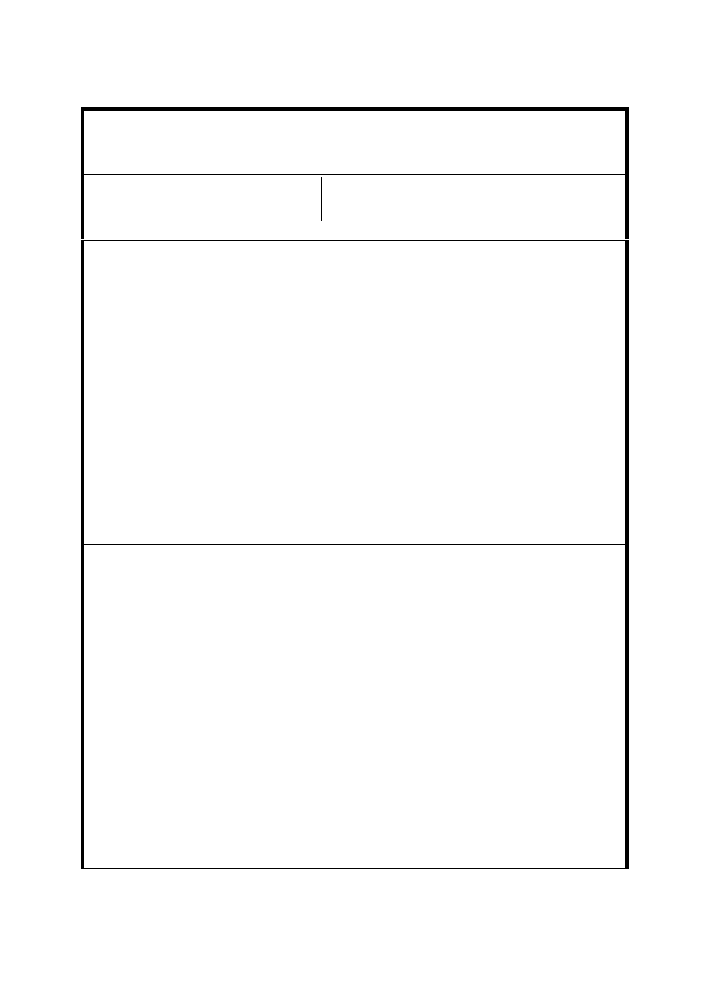

修訂「變 更臺北市文山區景美溪左岸（萬壽橋至道南橋間）
案 名 機關用地、公園用地、道路用地為第三種住宅區、道路用
地、公園用地細部計畫案」內有關重劃規定事項案
編
號 17
陳情人
財團法人台北市華亞之聲社中華基督教
便以利教會
陳 情 位 置 文山區政大段四小段 350-1 地號
1.市府迄未函文充分回覆申請人所曾提出之疑慮：
（1）開發建築回饋；
（2）所屬土地在重劃區內者之合建面積及相鄰者之交通
陳情理由
安全、道路用地徵收、畸零地等。
2.市府就前項疑慮以修訂案公告代之，惟申請人為宗教
財團法人，合意需經多項內部會議程序，故需一定時間
，公展期限內難明確回應修訂內容。
1.旨揭土地既已剔除於重劃範圍內，其開發建築回饋應依
實際開發時之細部計晝規範辦理之。
2.細部計畫檢討時應就交通安全、道路用地徵收、畸零地
等進行修訂。
建 議 辦 法 3.申請人即日已函文都市發展局展延提出意見之截止日
期至民國 103 年 6 月 30 日（詳附件）;尚請貴會檢知。
4.因貴會之議決對申請人權益影響甚鉅，尚請事涉申請人
事務時，通知並給予說明機會。
1.本案細部計畫已就剔除重劃範圍部分（政大段四小段
350-1地號）訂定開發建築回饋之相關規範。
2.有關道路交通安全，業經本府相關單位研商就公共管線
佈設、交通動線連貫性以及人行系統串連性等整體考
量，本計畫道路實有保留之必要性，且有利執行該區域
消防救災任務，爰維持本案計畫區南側東西向6米計畫
道路。至道路用地徵收係依道路主管機關編列年度預算
市 府 回 應 進度辦理。至倘涉有畸零地情形，應依本市畸零地使用
規則辦理。
3.有關陳情人函文展延提出意見之截止日，業經本局103
年6月12日北市都規字第10334423300號函復在案，因本
案自103年5月7日起公開展覽30天（至103年6月5日為
止），係依據都市計畫法第19條規定辦理，且公開展覽
期間已屆滿，無法延長至103年6月30日，惟於審議期間
仍可提出陳情意見。
委
決
員
會
議
同編號1。
第 - 11 - 頁，共 20 頁